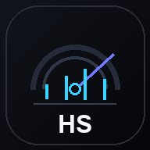

TODAY'S MARKET
今天市場摘要
載入市場摘要中…
展開完整摘要
整理完整市場原因中…
新聞明細
新聞載入中…

ETF MARKET SIGNAL SYSTEM
VERSION 6.2打開先看懂今天市場，再決定要不要加碼。週 KD 每日試算；0050、00631L 歷史價格已還原分割。
先看三項行情、今日買點機會與 ETF 買點快報。
切換自己的自選清單與弘昇精選，再查看買點細節。
只在此裝置管理個人持股，使用免費延遲行情估算損益與配置。
查看融資 FOMO、CNN 恐懼貪婪、三大法人與重大事件。
只整理可能影響市場的川普言論與政策。
ETF 比較、提醒與資料設定集中在這裡。
TAIWAN & GLOBAL MARKET
盤中延遲行情｜約每 5 分鐘更新｜僅供參考
市場解讀整理中…
整合市場、籌碼、估值與均線資料中…
MARKET SENTIMENT
情緒資料彙整中…
TODAY'S MARKET
AT A GLANCE
MY PORTFOLIO
ALLOCATION
TRUMP MARKET WATCH
標題與來源用來快速掌握風險，影響方向只是情境判讀，不代表市場一定照該方向反應。
CHIP OVERVIEW
SENTIMENT SUMMARY
CNN FEAR & GREED
MARGIN RISK
SMART MONEY
FUTURES POSITIONING
EVENT RISK
DRAWDOWN LEVELS
MY WATCHLIST
弘昇精選固定追蹤 8 檔 ETF，不受任何使用者的自選清單影響，也不包含持股股數、均價或成本。
外框顏色代表週 KD 的 J 值超賣程度，不等於直接買進訊號。仍需搭配買點分數、J 值是否回升、長期趨勢、事件風險與建議投入比例。
ALL SIGNALS
ETF COMPARATOR
GitHub Pages 無法在網站關閉時持續運作，因此此版會在開啟網站並更新資料時提醒。真正背景推播需另加後端排程服務。
ADD ETF
目前開放台灣掛牌 ETF。槓桿、反向、債券與主動式 ETF 會改用較保守的技術面提示，不直接套用一般股票 ETF 的投入比例。
DETAIL VIEW
LOCAL PORTFOLIO